DS1 de maths de l'année dernière — corrigé complet
Sujet du DS1 d'A&M1 (09.10.2025, 2 h, sans document ni calculatrice) : logique, ensembles, applications, résolution d'équations et d'inéquations, partie entière, bornes. 13 exercices. L'énoncé de chaque exercice (image) est juste au-dessus de sa correction. Il n'y avait pas de corrigé officiel : tout est rédigé et vérifié ici. 📄 Sujet original (PDF)
- 1 — Négations · 2 — Vrai/faux avec quantificateurs · 3 — Table de vérité · 4 — Contraposée
- 5 — Opérations sur des ensembles · 6 — Opération ⊙ · 7 — Produit cartésien
- 8 — Injectivité/surjectivité · 9 — Homographie · 10 — Application de ℝ²
- 11 — Équations et inéquations · 12 — Partie entière · 13 — Max/sup/min/inf
Exercice 1 — Négations
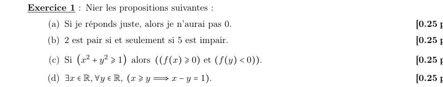
(a) « Si je réponds juste, alors je n'aurai pas 0 »
Forme \(P\Rightarrow Q\) avec \(P\) = « je réponds juste », \(Q\) = « je n'aurai pas 0 ». La négation est \(P\wedge\overline Q\) :
(b) « 2 est pair si et seulement si 5 est impair »
\(P\) = « 2 est pair », \(Q\) = « 5 est impair ». Négation : \((P\wedge\overline Q)\vee(Q\wedge\overline P)\).
(c) « Si \((x^2+y^2\ge1)\) alors \(((f(x)\ge0)\) et \((f(y)<0))\) »
Négation de \(P\Rightarrow(Q_1\wedge Q_2)\) : \(P\wedge\overline{Q_1\wedge Q_2}=P\wedge(\overline{Q_1}\vee\overline{Q_2})\).
(d) \(\exists x\in\mathbb R,\ \forall y\in\mathbb R,\ (x\ge y\Rightarrow x-y=1)\)
On échange les quantificateurs, puis on nie \(P\Rightarrow Q\) en \(P\wedge\overline Q\) :
Exercice 2 — Vrai ou faux ?
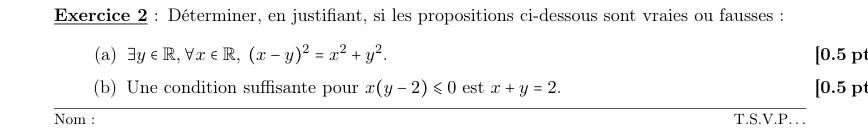
(a) \(\exists y\in\mathbb R,\ \forall x\in\mathbb R,\ (x-y)^2=x^2+y^2\)
On développe : \((x-y)^2=x^2-2xy+y^2\). L'égalité équivaut donc à \(-2xy=0\), soit \(xy=0\).
Le quantificateur \(\exists y\) vient en premier : il faut un seul \(y\) qui marche pour tous les \(x\). Avec \(y=0\), \(xy=0\) pour tout \(x\) ; vérification : \((x-0)^2=x^2=x^2+0^2\) ✓.
(b) « Une condition suffisante pour \(x(y-2)\le0\) est \(x+y=2\) »
Il faut montrer l'implication \(x+y=2\Rightarrow x(y-2)\le0\). Si \(x+y=2\) alors \(y-2=-x\), donc \[x(y-2)=x\cdot(-x)=-x^2\le0.\]
Exercice 3 — Table de vérité
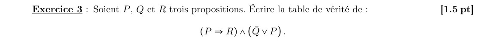
8 lignes (3 variables). On calcule les colonnes intermédiaires (V = vrai, F = faux). Rappel : \(P\Rightarrow R\) n'est fausse que si \(P\) vrai et \(R\) faux.
| P | Q | R | \(P\Rightarrow R\) | \(\overline Q\) | \(\overline Q\vee P\) | \((P\Rightarrow R)\wedge(\overline Q\vee P)\) |
|---|---|---|---|---|---|---|
| V | V | V | V | F | V | V |
| V | V | F | F | F | V | F |
| V | F | V | V | V | V | V |
| V | F | F | F | V | V | F |
| F | V | V | V | F | F | F |
| F | V | F | V | F | F | F |
| F | F | V | V | V | V | V |
| F | F | F | V | V | V | V |
Exercice 4 — Raisonnement par contraposée
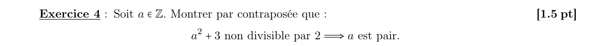
Contraposée. \((P\Rightarrow Q)\equiv(\overline Q\Rightarrow\overline P)\). Ici \(P\) = « \(a^2+3\) non divisible par 2 », \(Q\) = « \(a\) pair ». On montre donc :
\[a\ \text{impair}\ \Longrightarrow\ a^2+3\ \text{divisible par }2.\]Soit \(a\in\mathbb Z\) impair : il existe \(k\in\mathbb Z\) tel que \(a=2k+1\). Alors \[a^2+3=(2k+1)^2+3=4k^2+4k+1+3=4k^2+4k+4=2\,(2k^2+2k+2).\] Or \(2k^2+2k+2\in\mathbb Z\), donc \(a^2+3\) est un multiple de 2.
Exercice 5 — Opérations sur des ensembles
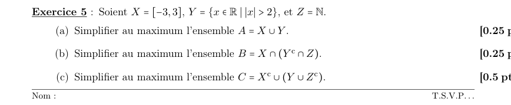
Cadre. \(|x|>2\Leftrightarrow x<-2\) ou \(x>2\), donc \(Y=]-\infty,-2[\,\cup\,]2,+\infty[\) et \(Y^c=[-2,2]\). On travaille dans \(\mathbb R\).
(a) \(A=X\cup Y\)
\(Y\) couvre \(]-\infty,-2[\) et \(]2,+\infty[\) ; \(X=[-3,3]\) couvre le reste, de \(-3\) à \(3\) (donc tout \([-2,2]\), qui manque à \(Y\)). Les morceaux se recollent : \(]-\infty,-3[\subset Y\), \([-3,3]=X\), \(]3,+\infty[\subset Y\).
(b) \(B=X\cap(Y^c\cap Z)\)
\(Y^c\cap\mathbb N=[-2,2]\cap\mathbb N=\{0,1,2\}\) (les entiers naturels de ce segment). Tous sont dans \(X\).
(c) \(C=X^c\cup(Y\cup Z^c)\)
Lois de De Morgan : \(Y\cup Z^c=(Y^c\cap Z)^c=\{0,1,2\}^c=\mathbb R\setminus\{0,1,2\}\). Ensuite \(X^c=]-\infty,-3[\cup]3,+\infty[\subset Y\), donc déjà inclus dans \(\mathbb R\setminus\{0,1,2\}\) : il n'ajoute rien.
Exercice 6 — L'opération \(A\odot B=(A\cap B)^c\)
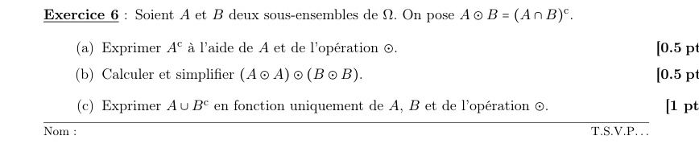
(a) \(A^c\) avec \(\odot\)
\(A\odot A=(A\cap A)^c=A^c\).
(b) \((A\odot A)\odot(B\odot B)\)
D'après (a), \(A\odot A=A^c\) et \(B\odot B=B^c\). Donc \[(A\odot A)\odot(B\odot B)=A^c\odot B^c=(A^c\cap B^c)^c=(A\cup B)^{cc}=A\cup B\] (De Morgan : \(A^c\cap B^c=(A\cup B)^c\)).
(c) \(A\cup B^c\) avec \(A\), \(B\) et \(\odot\) uniquement
\(A\cup B^c=(A^c\cap B)^c\) (De Morgan). Or \((A^c\cap B)^c=A^c\odot B\), et \(A^c=A\odot A\) :
Exercice 7 — Produit cartésien
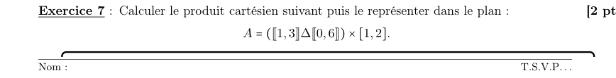
Définitions. \([\![ a,b]\!]\) = entiers de \(a\) à \(b\). \(E\,\Delta\,F=(E\setminus F)\cup(F\setminus E)\) (différence symétrique : éléments dans l'un des deux ensembles seulement).
\([\![1,3]\!]=\{1,2,3\}\) et \([\![0,6]\!]=\{0,1,2,3,4,5,6\}\). Comme \(\{1,2,3\}\subset\{0,\dots,6\}\), on a \(E\setminus F=\varnothing\) et \(F\setminus E=\{0,4,5,6\}\).
\[[\![1,3]\!]\,\Delta\,[\![0,6]\!]=\{0,4,5,6\}.\]Représentation : 4 segments verticaux (fermés : extrémités incluses), d'abscisses 0, 4, 5, 6 et d'ordonnées de 1 à 2. Ce n'est pas un rectangle : seules les abscisses entières de l'ensemble sont présentes.
Exercice 8 — Injectivité, surjectivité, bijectivité
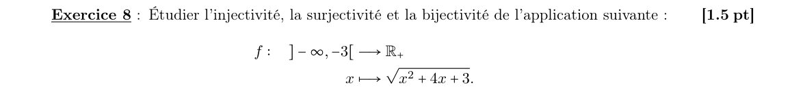
Forme canonique. \(x^2+4x+3=(x+2)^2-1=(x+1)(x+3)\). Pour \(x<-3\), \(x+1<0\) et \(x+3<0\) : le produit est \(>0\), la racine existe (et \(f(x)>0\)).
Injectivité
Soit \(a,b<-3\) avec \(f(a)=f(b)\). Les deux racines étant égales, leurs carrés aussi : \((a+2)^2-1=(b+2)^2-1\), donc \((a+2)^2=(b+2)^2\), soit \(a+2=\pm(b+2)\). Or \(a+2<-1<0\) et \(b+2<-1<0\) : ils ont le même signe, donc \(a+2=b+2\), soit \(a=b\).
Surjectivité sur \(\mathbb R_+\)
Cherchons un antécédent de \(0\) : \(f(x)=0\Leftrightarrow(x+1)(x+3)=0\Leftrightarrow x=-1\) ou \(x=-3\). Aucun n'est dans \(]-\infty,-3[\) (\(-3\) est exclu, \(-1>-3\)). Donc \(0\) n'a pas d'antécédent.
Exercice 9 — Une homographie
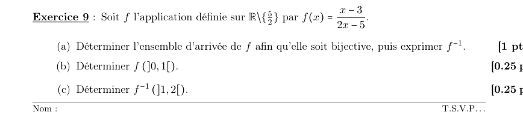
(a) Ensemble d'arrivée et \(f^{-1}\)
Pour \(y\) fixé, on résout \(y=\dfrac{x-3}{2x-5}\) en \(x\ne\frac52\) : \[y(2x-5)=x-3\iff 2xy-5y=x-3\iff x(2y-1)=5y-3.\] Si \(y=\tfrac12\) : \(0=\tfrac52-3=-\tfrac12\), impossible : \(\tfrac12\) n'a pas d'antécédent. Si \(y\neq\tfrac12\) : \(x=\dfrac{5y-3}{2y-1}\), et ce \(x\) est bien \(\ne\tfrac52\) car \(\dfrac{5y-3}{2y-1}=\dfrac52\Leftrightarrow10y-6=10y-5\), faux. Donc chaque \(y\neq\tfrac12\) a exactement un antécédent.
(b) \(f(]0,1[)\)
\(f'(x)=\dfrac{(2x-5)-2(x-3)}{(2x-5)^2}=\dfrac{1}{(2x-5)^2}>0\) : \(f\) est strictement croissante et continue sur \(]-\infty,\frac52[\supset\,]0,1[\). L'image d'un intervalle ouvert est donc \(]f(0),f(1)[\) avec \(f(0)=\frac{-3}{-5}=\frac35\) et \(f(1)=\frac{-2}{-3}=\frac23\).
(c) \(f^{-1}(]1,2[)\)
\(f^{-1}(y)=\dfrac52-\dfrac{1}{2(2y-1)}\) (vérification : \(\frac{5(2y-1)-1}{2(2y-1)}=\frac{10y-6}{2(2y-1)}=\frac{5y-3}{2y-1}\) ✓). Pour \(y\in]1,2[\) : \(2y-1\in]1,3[\), donc \(\frac1{2(2y-1)}\in]\frac16,\frac12[\) et \[f^{-1}(y)\in\left]\tfrac52-\tfrac12,\ \tfrac52-\tfrac16\right[=\left]2,\tfrac73\right[.\]
Exercice 10 — Une application de \(\mathbb R^2\) dans \(\mathbb R^2\)
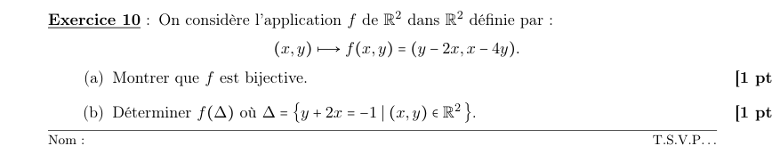
(a) \(f\) est bijective
Soit \((a,b)\in\mathbb R^2\). On cherche \((x,y)\) tel que \(f(x,y)=(a,b)\), c'est-à-dire \[\begin{cases}y-2x=a\\ x-4y=b\end{cases}.\] De la 1ʳᵉ : \(y=a+2x\). Dans la 2ᵉ : \(x-4a-8x=b\), soit \(-7x=4a+b\), donc \(x=-\dfrac{4a+b}{7}\), puis \(y=a-\dfrac{2(4a+b)}{7}=-\dfrac{a+2b}{7}\).
Le système a donc une unique solution pour tout \((a,b)\) (existence ⇒ surjective, unicité ⇒ injective). Vérification : \(y-2x=\frac{-a-2b+8a+2b}{7}=a\) ✓ ; \(x-4y=\frac{-4a-b+4a+8b}{7}=b\) ✓.
(b) \(f(\Delta)\) avec \(\Delta=\{(x,y)\mid y+2x=-1\}\)
Comme \(f\) est bijective : \((X,Y)\in f(\Delta)\iff f^{-1}(X,Y)\in\Delta\). Avec \(x'=-\frac{4X+Y}{7}\), \(y'=-\frac{X+2Y}{7}\) la condition \(y'+2x'=-1\) devient \[-\frac{X+2Y}{7}-\frac{2(4X+Y)}{7}=-1\iff-\frac{9X+4Y}{7}=-1\iff9X+4Y=7.\]
Exercice 11 — Équations et inéquations
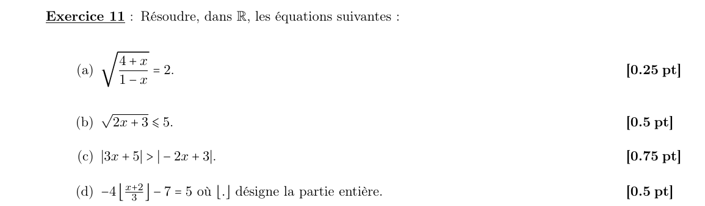
(a) \(\sqrt{\dfrac{4+x}{1-x}}=2\)
Domaine : \(x\ne1\) et \(\frac{4+x}{1-x}\ge0\) ⇒ \(x\in[-4,1[\). Les deux membres étant positifs, on élève au carré (équivalence) : \(4+x=4(1-x)\iff5x=0\iff x=0\), qui est dans le domaine. Vérification : \(\sqrt{4/1}=2\) ✓.
(b) \(\sqrt{2x+3}\le5\) (une inéquation)
Domaine : \(2x+3\ge0\iff x\ge-\frac32\). Sur ce domaine, \(\sqrt{\cdot}\) est croissante et les deux côtés sont positifs : \(\sqrt{2x+3}\le5\iff2x+3\le25\iff x\le11\).
(c) \(|3x+5|>|-2x+3|\)
Les deux membres sont positifs, donc on peut élever au carré : \((3x+5)^2>(-2x+3)^2\). On factorise \(u^2-v^2=(u-v)(u+v)\) : \[\big[(3x+5)-(-2x+3)\big]\big[(3x+5)+(-2x+3)\big]>0\iff(5x+2)(x+8)>0.\] Racines \(-\frac25\) et \(-8\) ; produit de deux facteurs croissants positif à l'extérieur des racines.
(d) \(-4\left\lfloor\dfrac{x+2}{3}\right\rfloor-7=5\)
On isole : \(-4\lfloor\cdot\rfloor=12\), donc \(\left\lfloor\frac{x+2}{3}\right\rfloor=-3\). Par définition de la partie entière : \[-3\le\frac{x+2}{3}<-2\iff-9\le x+2<-6\iff-11\le x<-8.\]
Exercice 12 — Partie entière et entier
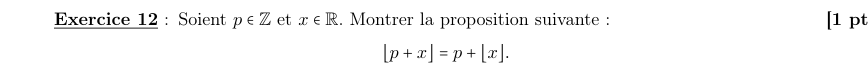
Rappel. \(\lfloor y\rfloor\) est l'unique entier \(n\) tel que \(n\le y<n+1\).
Par définition, \(\lfloor x\rfloor\le x<\lfloor x\rfloor+1\). On ajoute l'entier \(p\) partout : \[p+\lfloor x\rfloor\le p+x<p+\lfloor x\rfloor+1.\] Or \(p+\lfloor x\rfloor\in\mathbb Z\) (somme de deux entiers) : c'est un entier \(n\) qui encadre \(p+x\) comme l'exige la définition. Par unicité, \(\lfloor p+x\rfloor=p+\lfloor x\rfloor\). ∎
Exercice 13 — Max, sup, min, inf
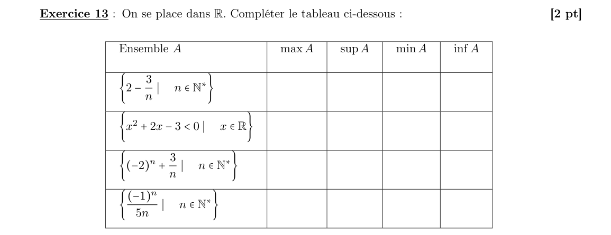
| Ensemble | max | sup | min | inf |
|---|---|---|---|---|
| \(\{2-\frac3n\mid n\in\mathbb N^*\}\) | n'existe pas | \(2\) | \(-1\) | \(-1\) |
| \(\{x\in\mathbb R\mid x^2+2x-3<0\}\) | n'existe pas | \(1\) | n'existe pas | \(-3\) |
| \(\{(-2)^n+\frac3n\mid n\in\mathbb N^*\}\) | n'existe pas | \(+\infty\) | n'existe pas | \(-\infty\) |
| \(\{\frac{(-1)^n}{5n}\mid n\in\mathbb N^*\}\) | \(\frac1{10}\) | \(\frac1{10}\) | \(-\frac15\) | \(-\frac15\) |
Ensemble 1 : \(2-\dfrac3n\)
\(n\mapsto-\frac3n\) est strictement croissante, donc la suite aussi : \(n=1\to-1\), \(n=2\to\frac12\), \(n=3\to1\), … Le plus petit terme est \(-1\) (atteint pour \(n=1\)) : min = inf = \(-1\). Elle tend vers \(2\) sans l'atteindre (\(2-\frac3n<2\)) : sup = \(2\), mais \(2\notin A\), donc pas de max.
Ensemble 2 : \(\{x\mid x^2+2x-3<0\}\)
\(x^2+2x-3=(x+3)(x-1)<0\iff x\in\,]-3,1[\). Intervalle ouvert : sup = \(1\), inf = \(-3\), jamais atteints ⇒ ni max ni min.
Ensemble 3 : \((-2)^n+\dfrac3n\)
Pour \(n\) pair (\(n=2k\)) : \(4^k+\frac3{2k}\to+\infty\) ⇒ non majoré. Pour \(n\) impair : \(-2^n+\frac3n\to-\infty\) ⇒ non minoré. Donc sup \(=+\infty\), inf \(=-\infty\), et ni max ni min (aucun maximum/minimum réel).
Ensemble 4 : \(\dfrac{(-1)^n}{5n}\)
\(n\) pair : valeurs positives \(\frac1{5n}\), la plus grande pour \(n=2\) : \(\frac1{10}\). \(n\) impair : valeurs négatives \(-\frac1{5n}\), la plus petite pour \(n=1\) : \(-\frac15\). Les extrema sont atteints : max = sup = \(\frac1{10}\), min = inf = \(-\frac15\). (La suite tend vers \(0\), qui n'est ni sup ni inf.)